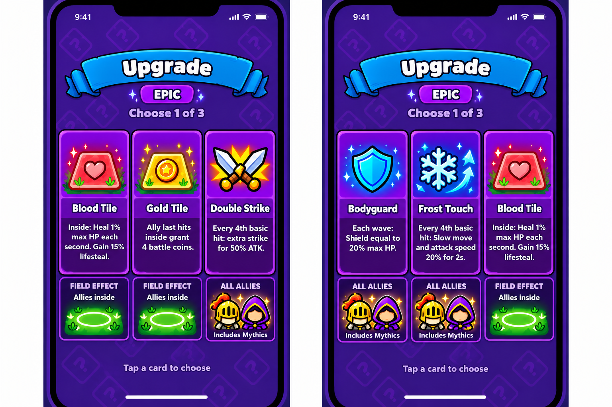
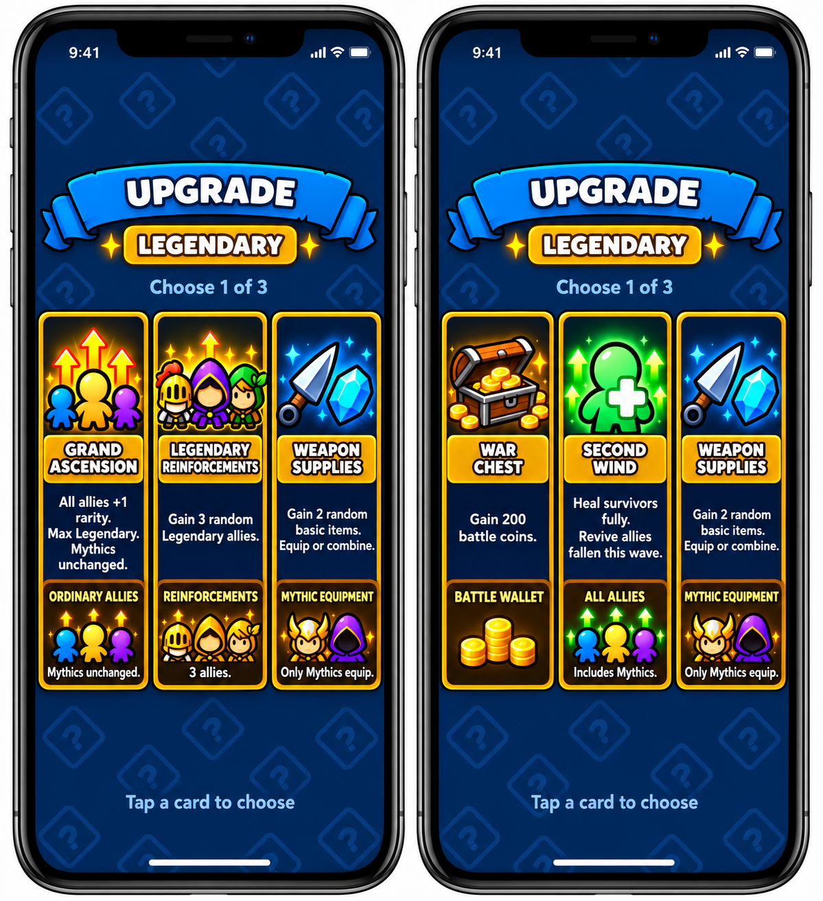

Demo chưa đưa vào game. Mỗi bậc có 5 buff; hai lượt mẫu có một thẻ lặp lại để xem đủ bộ. Hàng dưới thẻ ghi phạm vi hoặc Mythic liên quan. Chân dung chỉ minh họa; khi triển khai sẽ dùng lính thực tế trên sân.


Đại Thăng Cấp không nâng Legendary thành Mythic. Tiếp Tế cấp item cơ bản dành cho Mythic. Cứu Viện không hoàn lại nguyên liệu đã ghép. Các luật thời gian ô và xử lý bàn/túi đầy còn cần chốt.